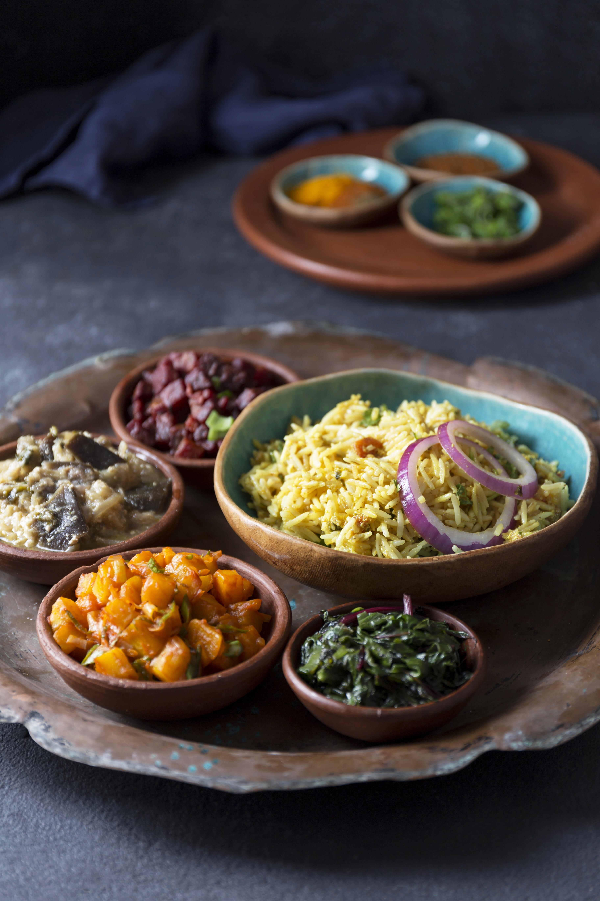

Estd. 2023 • Jaipur
Pure Jain Cuisine.
Thoughtfully Served
A refined vegetarian dining experience rooted in tradition, clarity, and balance.

Cooking with Intention.
Crafted with devotion to Jain values, clean ingredients, gentle spices, and absolute purity.
We believe that true flavor comes from fresh ingredients, balanced spices, and a mindful preparation process that respects the source of our nourishment.
Our PhilosophyJain-Certified
Kitchen & Ingredients
Fresh Daily
Prepared Each Morning
Serene Ambience
Calm, Elegant Space
Respectful Service
Hospitable & Attentive
Chef's Recommendations

Jain Kadhi

Pulao

Jain Thali

jain Vegetable Sabzi
A Space for Mindful Dining
We invite you to pause, breathe, and savor.
Reserve Your TableWALK-INS WELCOME • RESERVATIONS RECOMMENDED